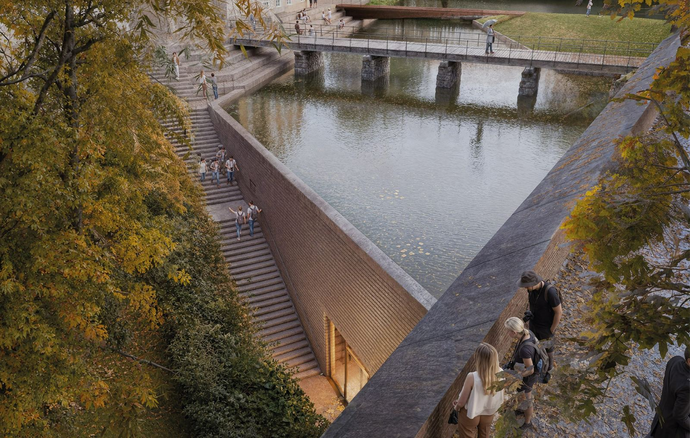
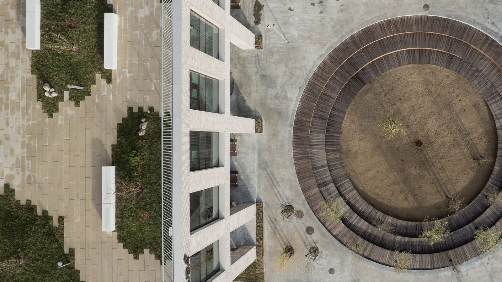
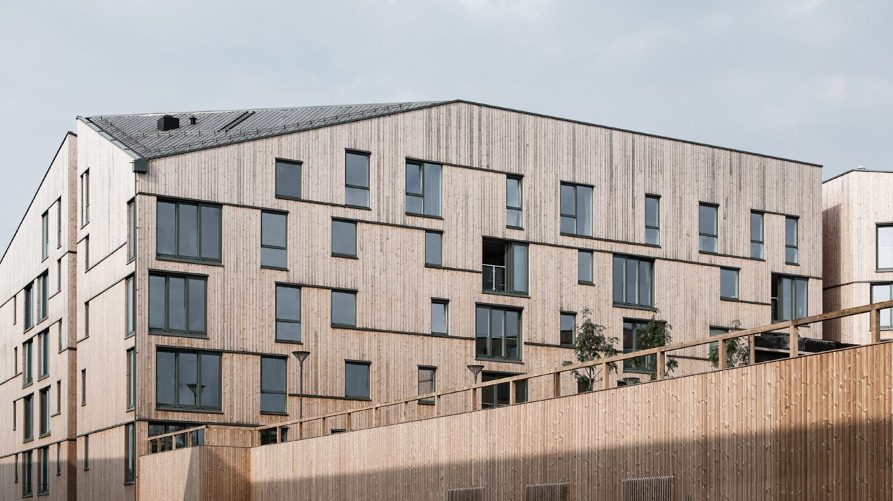

Nyheder
Nyheder
AART Show navigation Hide navigation Dansk English Norsk Deutsch Projects Services Impact News Career About us Contact Job openings Publications Press room More The world calls for positive change and for organisations with the will to take responsibility. At AART, we act responsible through the built environment with an ambition to create architecture that has an impact on people, the environment and society.
We insist that the cities, landscapes, and buildings we develop must point forward, and we always aim to create thoughtful architecture for people.
At AART we challenge the common understanding of architecture - not just in the way we perceive it and talk about it, but also in the way we use architecture strategically and consciously as a catalyst for developing the world around us.
AART Navigation anzeigen Navigation ausblenden Dansk English Norsk Deutsch Projekte Über uns Kontakt Mehr In einer Welt, die nach positiver Veränderung ruft, ist Architektur mehr als nur ein Rahmen für unser Leben.



Kort fortalt: hva trenger du?
Beskriv saken, så svarer vi med hva det krever og hva det koster.